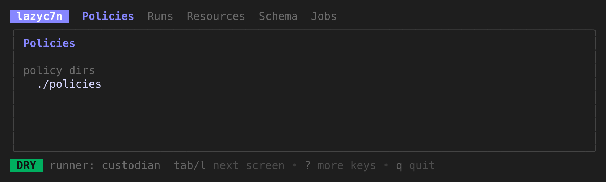
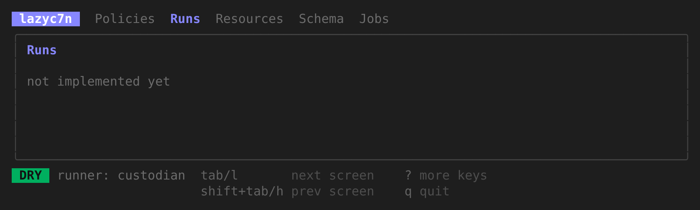

terminal UI for the custodian CLI early alpha
lazy-c7n
Cloud Custodian, without memorising a single flag.
Browse policies, validate, dry-run, run, and read results and logs from one keyboard-driven screen.
In the spirit of lazygit and lazydocker. That is the plan.
Today the scaffold is built and tested, and the rest is on the roadmap.
git clone https://github.com/rmandevs/lazy-c7n.git
cd lazy-c7n && go build -o lazyc7n ./cmd/lazyc7n && ./lazyc7nView on GitHub See what works today

why
You already write c7n YAML. The loop around it is a pile of long commands, retyped with small changes all day.
lazy-c7n is meant to turn that loop into a few keys: one tab each for policies, runs, matched resources, the c7n schema and jobs, with the exact custodian command always visible.
It does not do that yet. Today you get the shell of the app. The status section lists exactly what works.
custodian validate ...
custodian run --dryrun -s ./out \
-p 's3-*' -r us-east-1 ...
cat out/*/resources.json | jq ...
# edit the policy, then do it all againstatus
Early alpha. One of six milestones is done. Each row below is a slice that ships on its own. Nothing marked next or planned exists in the binary today.
- M0 Scaffold: config loading, tabs, key help, clean terminal setup and teardown, CI on Linux, macOS and Windows done
- M1 Read-only browser: policy tree, YAML view, runs and resources from an existing output dir next
- M2 Validate and dry-run with live log streaming and run history planned
- M3 Live runs with preflight and typed confirmation planned
-
M4
Schema browser, fuzzy search,
$EDITORintegration, themes planned - M5 Prebuilt binaries, Homebrew, AUR, Scoop planned

The full design is in docs/SPEC.md. This is the best moment to influence it: open an issue with the workflow you wish a c7n TUI made easier, or tell us what breaks on your OS, terminal or c7n version.
install
There are no prebuilt releases yet, so build from source. It takes about a minute.
Requirements
- Go 1.26 or newer.
- Cloud Custodian, with
custodianon yourPATH.
pipx install c7nBuild and run
git clone https://github.com/rmandevs/lazy-c7n.git
cd lazy-c7n
go build -o lazyc7n ./cmd/lazyc7n
./lazyc7n
Hop between screens with Tab and Shift+Tab, press ? for keys, q to quit.
Flags: -config <file> to use a specific config file, -version to print the version.
Configure (optional)
Config lives in ~/.config/lazyc7n/config.toml (it follows $XDG_CONFIG_HOME).
A .lazyc7n.toml in the current directory overrides it.
The file is loaded and checked today. The runner and safety settings start to matter when runs arrive in M2 and M3.
policy_dirs = ["./policies"]
[runner]
kind = "binary" # binary | docker | command
custodian = "custodian" # or a path, e.g. ".venv/bin/custodian"
[safety]
default_dry_run = true
confirm_live = "type-name"principles
The rules the project is held to, including for the parts that are not built yet.
- Thin wrapper
- The real
custodianexecutable does all the work. lazy-c7n never reimplements c7n logic, and it shows you the exact command it runs. - Safe by default
- Dry-run comes first. Live runs will sit behind a typed confirmation that cannot be skipped by accident, with the actions that will execute spelled out.
- Local only
- One binary. No server, no database, no telemetry. Credentials come from your environment and are never stored, logged or displayed.
- Lenient parsing
- Unknown fields in policies and output are ignored, so the tool keeps working as c7n evolves.
- Open source, non-profit
- MIT OR Apache-2.0, at your option. Contributions are welcome. Read the spec first.